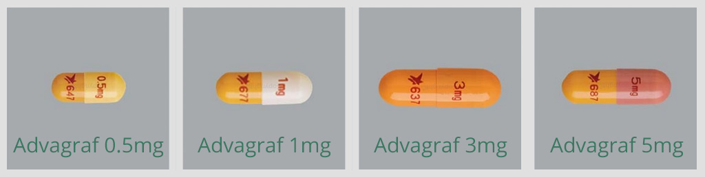

Tacrolimus
[tak-row-lim-us]
BRAND NAMES: PROGRAF®, ADVAGRAF®
- • Tacrolimus oral suspension (prepared by transplant pharmacy)
- • Tacrolimus EXTENDED release (ADVAgraf®), a once a day capsule
- • Tacrolimus IMMEDIATE release (PROgraf®), a twice daily capsule
What is this medication for?
Tacrolimus is a medication used to lower your body’s immune system to prevent your transplanted organ from being rejected. It makes your white blood cells weaker so they cannot damage the new organ.
- Tacrolimus EXTENDED release (ADVAgraf®):
 - Tacrolimus IMMEDIATE release (PROgraf®):

How should I take this medication?
Tacrolimus should be taken with food to decrease stomach upset, but may be taken on an empty stomach if preferred. Be consistent, if you take it with food, always take it with food; if you take it on an empty stomach, always take it on an empty stomach.

Do not take calcium supplements or antacids (Diovol®, Maalox®, etc.) within 2 hours of tacrolimus as antacids may decrease the absorption of the medication by the body. You may take tacrolimus at the same time with stomach acid reducing medications (e.g. ranitidine (Zantac®), pantoprazole (Tecta®) etc.).
When having tacrolimus blood levels drawn, do not take the morning dose of medication until after your blood sample is taken.
 | Avoid grapefruit or grapefruit juice while on this medication due to a serious interaction. |
What are some possible side effects of this medication?
 | Tremor, shakiness, headache, seizuresPresence of these side effects may be a sign of high tacrolimus levels. Report these symptoms to your doctor. These side effects will go away when your doctor adjusts the dose. |  |
 | High blood pressureCheck your blood pressure regularly. Avoid foods high in salt or sodium. |  |
 | High blood sugarIf you are diabetic, make sure you monitor your sugars regularly. Report any numbness or tingling in your hands or feet, increased thirst, dry mouth, fruity odour on your breath, or increased urinary frequency to your doctor. |
 | Heartburn, nausea, vomitingCheck with your doctor if any of these are bothersome or persistent. |
 | Mood changes, depression, confusion, difficulty sleeping, abnormal dreamsCheck with your doctor if any of these are bothersome or persistent. |  |
 | Thinning or loss of hairReport these symptoms to your doctor. |
 | Your body's ability to handle illness or injury is weakened by tacrolimusCheck with your doctor if you have an infection, illness or injury or are experiencing fever, chills, sore throat or other symptoms of a cold or flu. |  |
 | Decrease in kidney functionHigh tacrolimus levels may decrease your kidney function. Notify your doctor if you notice any changes in your urine or the amount produced. |
CancerTaking this medication may increase your risk of skin and other cancers. Please inform your transplant team if you are diagnosed with cancer. For additional information please see section on “Cancer Risk”. |